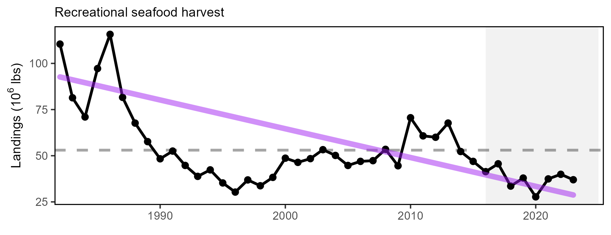
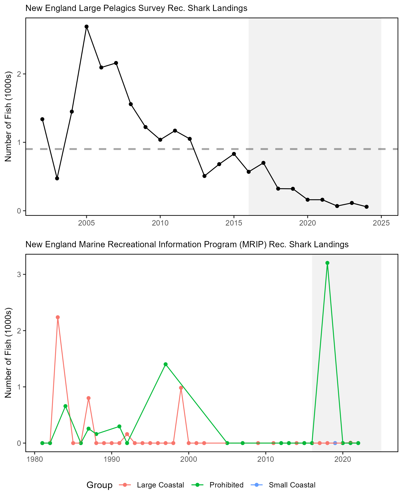
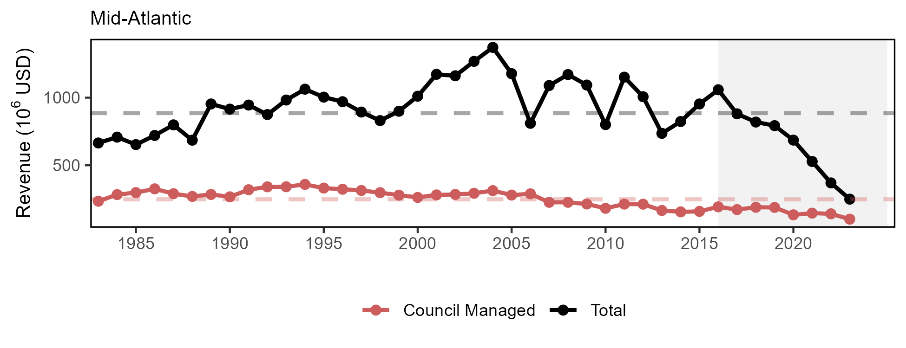
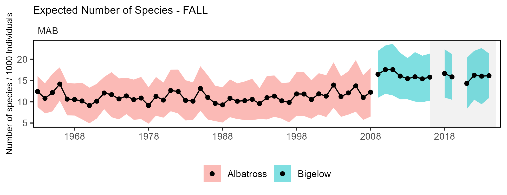
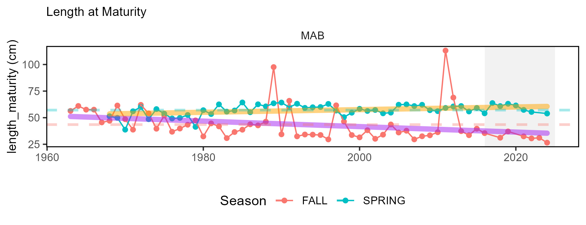
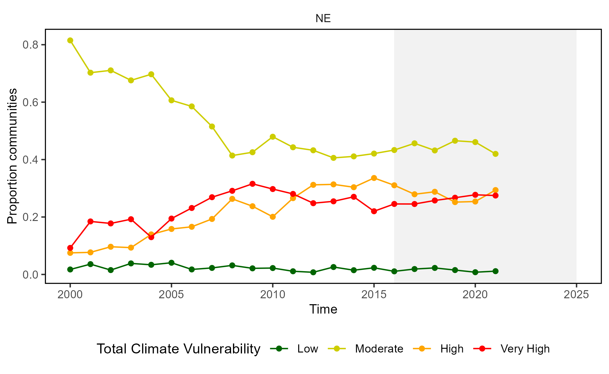
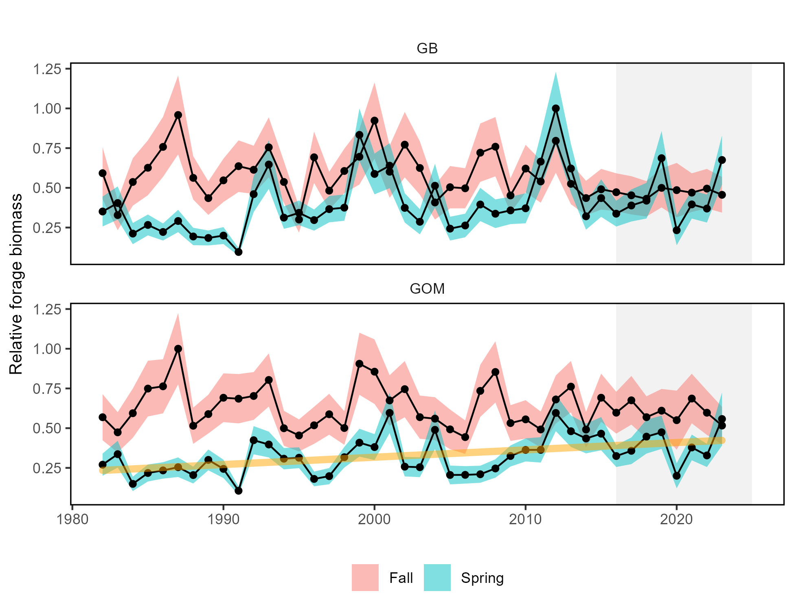
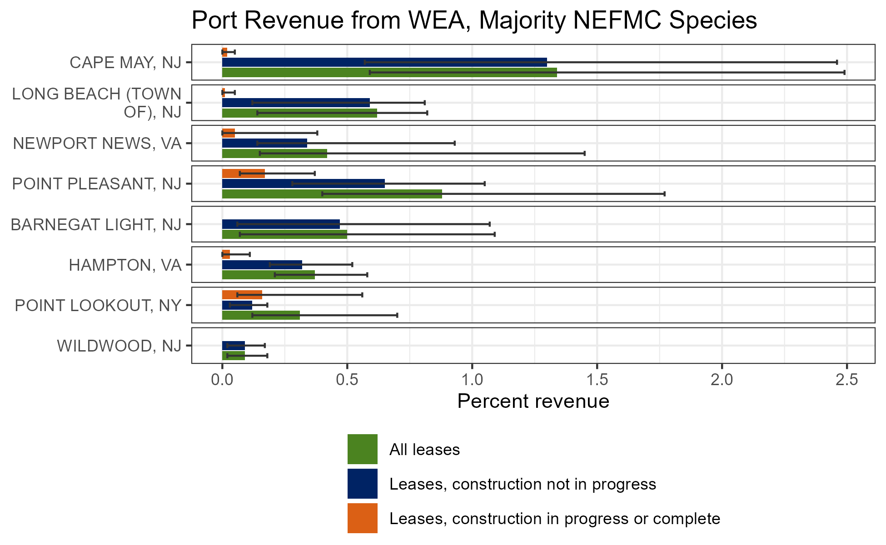
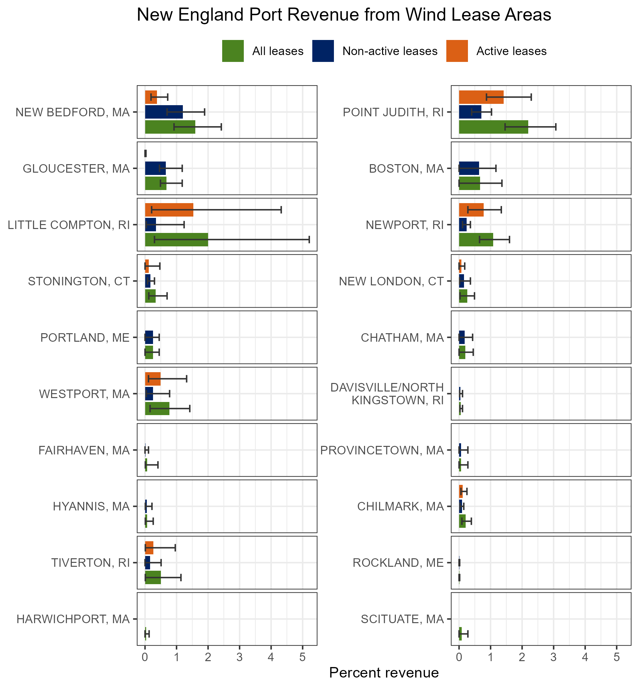
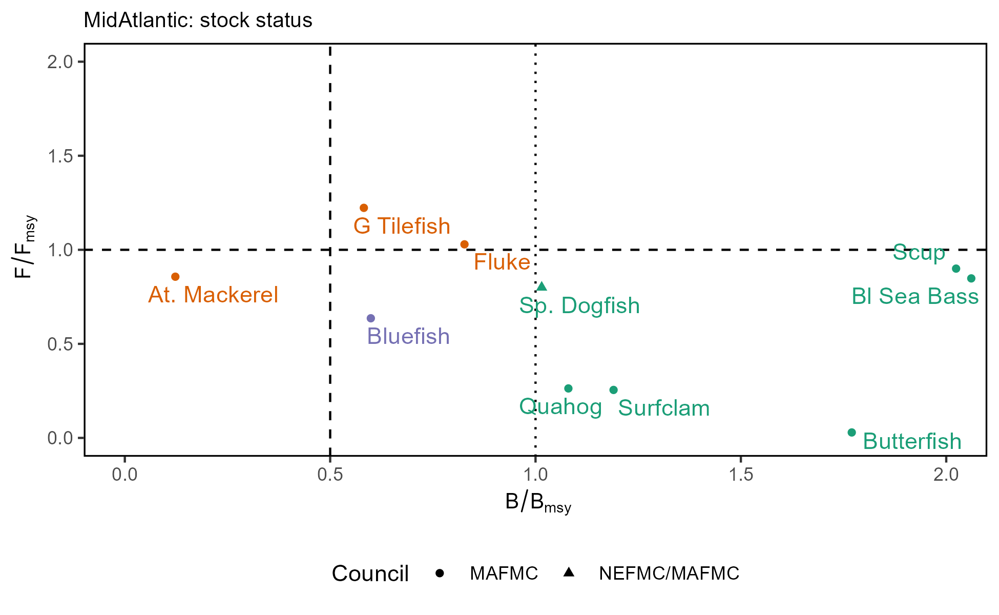

State of the Ecosystem
[Mid-Atlantic] or [New England] 2025
NEFMC, MAFMC
December 12, 2025
State of the Ecosystem: Maintain 2024 structure for 2025
2025 Report Structure
- Graphical summary
- Page 1 report card re: objectives →
- Page 2 risk summary bullets
- Page 3 2024 snapshot
- Performance relative to management objectives
- Risks to meeting management objectives
- Climate and Ecosystem risks
- Offshore wind development
- 2024 Highlights


Ecosystem synthesis themes
Characterizing ecosystem change for fishery management
- Societal, biological, physical and chemical factors comprise the multiple system drivers that influence marine ecosystems through a variety of different pathways.
- Changes in the multiple drivers can lead to regime shifts — large, abrupt and persistent changes in the structure and function of an ecosystem.
- Regime shifts and changes in how the multiple system drivers interact can result in ecosystem reorganization as species and humans respond and adapt to the new environment.


State of the Ecosystem report scale and figures

A glossary of terms (2021 Memo 5), detailed technical methods documentation and indicator data are available online.
Key to figures

Long-term trends assessed only for 30+ years: more information
Short-term trends assessed for last 10 years of data OR a full time series <30 years
Orange line = significant increase
Purple line = significant decrease
No color line = not significant or < 30 years
Grey background = last 10 years
Mid Atlantic State of the Ecosystem Summary 2025:
Performance relative to management objectives
Seafood production  ,
, 
Profits  ,
,
Recreational opportunities: Effort 
 Effort diversity
Effort diversity
Stability: Fishery not stable; Ecological not stable
Social and cultural:
Fishing engagement and social vulnerability status by community
Revenue climate vulnerability
 , majority high risk
, majority high risk
Protected species:
Maintain bycatch below thresholds (harbor porpoise, gray seals)


Recover endangered populations (NARW)


State of the Ecosystem Summary 2025:
Risks to meeting fishery management objectives
Climate: risks to managing spatially, managing seasonally, and catch specification
Fish and protected species distribution shifts
Changing spawning and migration timing
Multiple stocks with poor condition, declining productivity
Other ocean uses: offshore wind development
- Current revenue in proposed areas
- 1-46% by Mid-Atlantic port
- 2-16% by MAFMC managed species
- Overlap with important right whale foraging habitats, increased vessel strike and noise risks
New England State of the Ecosystem Summary 2025:
Performance relative to management objectives - Georges Bank
Seafood production Total , Managed , Both
Profits ,
Recreational opportunities: Effort  Effort diversity
Effort diversity
Stability: Fishery not stable; Ecological not stable
Social and cultural:
Fishing engagement and social vulnerability status by community
Revenue climate vulnerability
 , majority medium risk
, majority medium risk
Protected species:
Maintain bycatch below thresholds (harbor porpoise, gray seals)


Recover endangered populations
 , NARW
, NARW  Gray seal
Gray seal 

New England State of the Ecosystem Summary 2025:
Performance relative to management objectives - Gulf of Maine
Seafood production ,
Profits Total , ; NEFMC managed ,
Recreational opportunities: Effort Effort diversity
Stability: Fishery not stable; Ecological not stable
Social and cultural:
Fishing engagement and social vulnerability status by community
Revenue climate vulnerability
 , majority medium risk
, majority medium risk
Protected species:
Maintain bycatch below thresholds (harbor porpoise, gray seals)


Recover endangered populations
 , NARW
, NARW  Gray seal
Gray seal  Salmon
Salmon 

State of the Ecosystem Summary 2025:
Risks to meeting fishery management objectives
Climate: risks to managing spatially, managing seasonally, and catch specification
Fish and protected species distribution shifts
Changing spawning and migration timing
Multiple stocks with poor condition, declining productivity
Other ocean uses: offshore wind development
- Current revenue in proposed areas
- 1-32% by New England port
- 1-20% by NEFMC
- Overlap with important right whale foraging habitats, increased vessel strike and noise risks

State of the Ecosystem Summary 2025: 2024 Highlights
Notable 2024 events and conditions
2024 warmest year on record globally. Again.
BUT
Cooler conditions across the coast
Well established Mid Atlantic Cold Pool
Multiple summer upwelling events off NJ
Extreme ocean acidification measured off NJ
Many fishery observations of different spatial and timing patterns, changed abundance
Good scallop recruitment in Nantucket lightship
More red drum in Chesapeake Bay
Arctic copepods in GOM
Cocolithophore bloom off NY
Large whale aggregations
We welcome your observations! northeast.ecosystem.highlights@noaa.gov
2025 Performance relative to management objectives


Objective: Mid Atlantic Seafood production 
 Risk elements: ComFood and RecFood, unchanged
Risk elements: ComFood and RecFood, unchanged
Indicators: Commercial landings, climate risk


Indicators: Recreational harvest


Multiple potential drivers: ecosystem and stock production, management, market conditions, and environmental change.
Mid Atlantic Landings drivers: Stock status? TAC? Risk elements: Fstatus, Bstatus, MgtControl
Indicator: Stock status

Indicators: Total ABC or ACL, and Realized catch relative to management target


Few managed species have binding limits; Management less likely playing a role
Implications: Mid Atlantic Seafood Production Drivers
Biomass does not appear to drive landings trends

Key:
- Black = NEFSC survey
Red = NEAMAP survey
- Declining aggregate planktivores, benthos?

- Recreational drivers differ: shark fishery management, possibly survey methodology
Monitor:
climate risks including warming, ocean acidification, and shifting distributions
ecosystem composition and production changes
fishing engagement
Objective: New England Seafood production 


Indicators: Commercial landings, climate risk

Indicators: Recreational harvest


Multiple drivers: ecosystem and stock production, management actions (stock rebuilding), market conditions (including COVID-19 disruptions), and environmental change
Objective: Mid Atlantic Commercial Profits 
 Risk element: CommRev, unchanged
Risk element: CommRev, unchanged
Indicator: Commercial Revenue; profit indicators under SSC review


Indicator: Bennet–price and volume indices


Objective: New England Commercial Profits 

Objective: Mid Atlantic Recreational opportunities 
 ;
; 
 Risk elements: RecValue, RecDiv
Risk elements: RecValue, RecDiv
Indicators: Recreational effort and fleet diversity


Implications
Adding 2023 data, recreational effort (angler trips) retains the long term increase.
The increasing long term trend changed the risk category for the RecValue element back to low-moderate (previously ranked low risk).
New risk element: Decline in recreational fleet diversity suggests a potentially reduced range of opportunities.
Driven by party/charter contraction and a shift toward shore based angling.
Objective: New England Recreational opportunities 

Indicators: Recreational effort and fleet diversity


Implications
- Absence of a long-term trend in recreational effort suggests relative stability in the overall number of recreational opportunities in New England
Objective: Mid Atlantic Fishery Stability: Not Stable Risk elements: FleetDiv and FishRes1
Fishery Indicators: Commercial fleet count, fleet diversity

Fishery Indicators: commercial species revenue diversity, recreational species catch diversity


Objective: Mid Atlantic Ecological Stability: Not Stable
Ecological Indicators: PP and zooplankton


Ecological Indicators: fish richness and traits


Objective: New England Ecological Stability 

Community Social and Climate Vulnerability Risk element: Social
Indicators: Commercial fishery engagement, social vulnerability, revenue climate vulnerability

Community | Personal Disruption | Population Composition | Poverty |
|---|---|---|---|
Cape May, NJ | low | med | low |
Reedville, VA | low | low | low |
Montauk, NY | low | low | low |
Point Pleasant Beach, NJ | med | low | low |
Hampton Bays/Shinnecock, NY | low | high | low |
Barnegat Light, NJ | low | low | low |
Bronx/City Island, NY | high | high | high |
Newport News, VA | med | low | med |
Hampton, VA | med | low | med |
Wanchese, NC | low | low | low |
Atlantic City, NJ | high | high | high |
Ocean City, MD | med | low | low |
Swan Quarter, NC | low | low | low |
Wachapreague, VA | low | low | low |
Quinby, VA | med | low | low |
Bowers, DE | low | low | low |
Little Creek, DE | high | low | high |
Oak Beach, NY | low | low |
Community Social and Climate Vulnerability Risk element: Social
Indicators: Commercial fishery revenue climate vulnerability

The Community Climate Change Risk Indicators are calculated by multiplying the percent contribution of species to the total value landed in a community by their respective Total Vulnerability scores (based on NOAA’s Climate Vulnerability Assessment) for different sensitivity and exposure factors and then summing the resulting values by year.

Community Social and Climate Vulnerability Risk element: Social
Indicators: Recreational fishery engagement, social vulnerability

Community | Personal Disruption | Population Composition | Poverty |
|---|---|---|---|
Cape May, NJ | low | med | low |
Montauk, NY | low | low | low |
Point Pleasant Beach, NJ | med | low | low |
Barnegat Light, NJ | low | low | low |
Ocean City, MD | med | low | low |
Virginia Beach, VA | low | low | low |
Morehead City, NC | med | low | med |
Hatteras township, NC | low | low | low |
Wachapreague, VA | low | low | low |
Avon, NC | high | low | |
Atlantic Highlands, NJ | low | low | low |
Babylon, NY | low | low | low |
Nags Head, NC | low | low | low |
Point Lookout, NY | low | low | low |
Nanticoke, MD | med high | low | low |
Orient, NY | low | low | |
Bivalve, MD | med | high | |
Rodanthe, NC | low | low | |
Topsail Beach, NC | low | low | low |
Solomons Island/Solomons/Lusby, MD | low | low | low |
Stevensville, MD | med | low | low |
New England Community Social and Climate Vulnerability
Indicators: Commercial fishery revenue climate vulnerability

The Community Climate Change Risk Indicators are calculated by multiplying the percent contribution of species to the total value landed in a community by their respective Total Vulnerability scores (based on NOAA’s Climate Vulnerability Assessment) for different sensitivity and exposure factors and then summing the resulting values by year.
New England communities shifting towads High/Very High climate vulnerability. Consolidating Species
Objectives: Coastwide Protected species Maintain bycatch below thresholds 

Indicators: Harbor porpoise and gray seal bycatch


Implications:
Currently meeting objectives, but uncertainty in gray seal estimates
Risk element: TechInteract, evaluated by species and sector: 14 low, 7 low-mod, 2 mod-high risk
The downward trend in harbor porpoise bycatch can also be due to a decrease in harbor porpoise abundance in US waters, reducing their overlap with fisheries, and a decrease in gillnet effort.
Gray seal among the highest bycatch of any U.S. marine mammal. The increasing trend in gray seal bycatch may be related to an increase in the gray seal population (U.S. pup counts).
Objectives: Coastwide Protected species Recover endangered populations 

Indicators: North Atlantic right whale population, calf counts


Implications:
Signs the adult population stabilized 2020-2023
Population drivers for North Atlantic Right Whales (NARW) include combined fishery interactions/ship strikes, distribution shifts, and copepod availability.
Additional potential stressors include offshore wind development, which overlaps with important habitat areas used year-round by right whales, including mother and calf migration corridors and foraging habitat.
Unusual mortality events continue for 3 large whale species.
2025 Risks to meeting fishery management objectives


Risks to Managing Spatially: Coastwide
Indicators: Fish distribution shifts
Cetacean distribution shifts

Risks to Managing Spatially: Coastwide
Future considerations
Distribution shifts caused by changes in thermal habitat and ocean circulation are likely to continue as long as long-term trends persist. Episodic and short-term events (see 2024 Highlights) may increase variability in the trends, however species distributions are unlikely to reverse to historical ranges in the short term. Increased mechanistic understanding of distribution drivers is needed to better understand future distribution shifts: species with high mobility or short lifespans react differently from immobile or long lived species.
Long-term oceanographic projections forecast a temporary pause in warming over the next decade due to internal variability in circulation and a southward shift of the Gulf Stream. Near-term forecasts are being evaluated to determine how well they are able to predict episodic and anomalous events that are outside of the long-term patterns.
Adapting management to changing stock distributions and dynamic ocean processes will require continued monitoring of populations in space and evaluating management measures against a range of possible future spatial distributions. Processes like the East Coast Climate Scenario Planning, and subsequent formation of the East Coast Climate Coordination Group, can help coordinate management.

Risks to Managing Seasonally: Coastwide
Indicators: spawning timing, migration change

Recreational tuna fisheries 50 days earlier in the year in 2019 compared to 2002.
In Cape Cod Bay, peak spring habitat use by right and humpback whales has shifted 18-19 days later over time.
Baseline information on large whale seasonal presence has been collected.

Risks to Managing Seasonally: Mid-Atlantic
Drivers: thermal transition, habitat persistence, bloom timing

Cold pool seasonal persistence

Bloom timing

Future considerations
Management actions that rely on effective alignment of fisheries availability and biological processes should continue to evaluate whether prior assumptions on seasonal timings still hold.
New indicators should be developed to monitor timing shifts for stocks.
Risks to Setting Catch Limits: Mid-Atlantic
Indicators: fish productivity and condition


Risks to Setting Catch Limits: Mid Atlantic Drivers
Drivers: Forage Quality and Abundance


New indicators: benthos abundance

Risks to Setting Catch Limits: Mid Atlantic Drivers
Drivers: Low trophic levels

Risks to Setting Catch Limits: New England Drivers
Drivers: Forage Quality and Abundance

New indicators: benthos abundance

Risks to Setting Catch Limits: Coastwide
Drivers: Environmental
2024 Thermal habitat area by depth

Risks to Setting Catch Limits: Coastwide
Drivers: Environmental Potential Ocean Acidification Impacts: Scallops and Longfin squid

Drivers: Predation
Seals increasing, mix of population status for HMS
Risks to Setting Catch Limits
Future considerations
Processes that control fish productivity and mortality are dynamic, complex, and are the result of the interactions between multiple changing system drivers.
There is a real risk that short-term predictions in assessments and rebuilding plans that assume unchanging underlying conditions will not be as effective, given the observed change documented in the prior sections in both ecological and environmental processes.
Assumptions for species’ growth, reproduction, and natural mortality should continue to be evaluated for individual species.
With observations of system-wide productivity shifts of multiple managed stocks, more research is needed to determine whether regime shifts or ecosystem reorganization are occurring, and how this should be incorporated into management.
Risks: Offshore Wind Development Mid Atlantic Elements: OSW1 and OSW2
Indicators: fishery and community specific revenue in lease areas

Council request: New England ports relying on Mid-Atlantic managed species


Risks: Offshore Wind Development New England
Indicators: fishery and community specific revenue in lease areas

Council request: Mid-Atlantic ports relying on New England managed species


Risks: Offshore Wind Development: Implications

Implications:
Current plans for buildout of offshore wind in a patchwork of areas spreads the impacts differentially throughout the region.
Lease areas overlap with North Atlantic right whale habitat. Development may alter local oceanography and prey availability, increase vessel strike risk, and result in pile driving noise impacts.

2024 Highlights: Methods
Observations solicited from:
- SOE contributors
- NEFSC colleagues
- Academic colleagues
- Management partners
- Fishing industry
We welcome your observations! northeast.ecosystem.highlights@noaa.gov
Observations included if:
- Record high or low observations
- Different from recent conditions
- Reported by multiple sources
- Affecting fishery operations
- Newsworthy
Not exhaustive list; Full impacts remain to be seen
Reprinted from Cape Cod Commercial Fisherman’s Alliance February 2025 Newsletter →

2024 Highlights: generally cooler, fresher Northeast Shelf

Globally, 2024 warmest year on record (above previous record 2023)
BUT, nearly all NE shelf seasonal surface and bottom temperatures back to longer term average
2023-2024 data suggest more Labrador slope water into the GOM (Record et al., 2024)

Linked to well-developed 2024 Mid Atlantic Cold Pool
2024 Highlights

Extreme observation of ocean acidification risk off NJ
Multiple summer upwelling events off NJ
Unusual timing, location, abundance:
Fishery observations
- Delayed migration of longfin squid, black sea bass, haddock
- Unusual locations for pollock, bluefin tuna, Atlantic mackerel, longfin squid, bluefish, and bonito
- Local abundance of Atlantic mackerel
- Record catches of red drum in Chesapeake Bay
Good scallop recruitment in Nantucket lightship
Arctic copepods in GOM
Cocolithophore bloom off NY
Large whale aggregations

Take Home
Mostly meeting individual stock objectives.

Species distributions, timing, and productivity have changed. Ocean conditions highly variable year to year.
Ecosystem level management objectives worrying?
Declining seafood production
Historically low revenue
Declining range of recreational opportunities
Most community level revenue has high climate vulnerability

THANK YOU! SOEs made possible by (at least) 88 contributors from 20+ institutions
Andrew Applegate (NEFMC)
Kimberly Bastille
Aaron Beaver (Anchor QEA)
Andy Beet
Brandon Beltz
Ruth Boettcher (Virginia Department of Game and Inland Fisheries)
Mandy Bromilow (NOAA Chesapeake Bay Office)
Joseph Caracappa
Samuel Chavez-Rosales
Baoshan Chen (Stony Brook University)
Zhuomin Chen (UConn)
Doug Christel (GARFO)
Patricia Clay
Lisa Colburn
Jennifer Cudney (NMFS Atlantic HMS Management Division)
Tobey Curtis (NMFS Atlantic HMS Management Division)
Art Degaetano (Cornell U)
Geret DePiper
Bart DiFiore (GMRI)
Emily Farr (NMFS Office of Habitat Conservation)
Michael Fogarty
Paula Fratantoni
Kevin Friedland
Marjy Friedrichs (VIMS)
Sarah Gaichas
Ben Galuardi (GAFRO)
Avijit Gangopadhyay (SMAST UMass Dartmouth)
James Gartland (VIMS)
Lori Garzio (Rutgers University)
Glen Gawarkiewicz (WHOI)
Laura Gruenburg
Sean Hardison
Dvora Hart
Cliff Hutt (NMFS Atlantic HMS Management Division)
Kimberly Hyde
John Kocik
Steve Kress (National Audubon Society’s Seabird Restoration Program)
Young-Oh Kwon (Woods Hole Oceanographic Institution)
Scott Large
Gabe Larouche (Cornell U)
Daniel Linden
Andrew Lipsky
Sean Lucey (RWE)
Don Lyons (National Audubon Society’s Seabird Restoration Program)
Chris Melrose
Anna Mercer
Shannon Meseck
Ryan Morse
Ray Mroch (SEFSC)
Brandon Muffley (MAFMC)
Robert Murphy
Kimberly Murray
NEFSC staff
David Moe Nelson (NCCOS)
Chris Orphanides
Richard Pace
Debi Palka
Tom Parham (Maryland DNR)
CJ Pellerin (NOAA Chesapeake Bay Office)
Charles Perretti
Kristin Precoda
Grace Roskar (NMFS Office of Habitat Conservation)
Jeffrey Runge (U Maine)
Grace Saba (Rutgers University)
Vincent Saba
Sarah Salois
Chris Schillaci (GARFO)
Amy Schueller (SEFSC)
Teresa Schwemmer (URI)
Tarsila Seara
Dave Secor (CBL)
Emily Slesinger
Angela Silva
Adrienne Silver (UMass/SMAST)
Talya tenBrink (GARFO)
Abigail Tyrell
Rebecca Van Hoeck
Bruce Vogt (NOAA Chesapeake Bay Office)
Ron Vogel (University of Maryland Cooperative Institute for Satellite Earth System Studies and NOAA/NESDIS Center for Satellite Applications and Research)
John Walden
Harvey Walsh
Sarah Weisberg
Changhua Weng
Dave Wilcox (VIMS)
Timothy White (Environmental Studies Program BOEM)
Sarah Wilkin (NMFS Office of Protected Resources)
Mark Wuenschel
Qian Zhang (U Maryland)